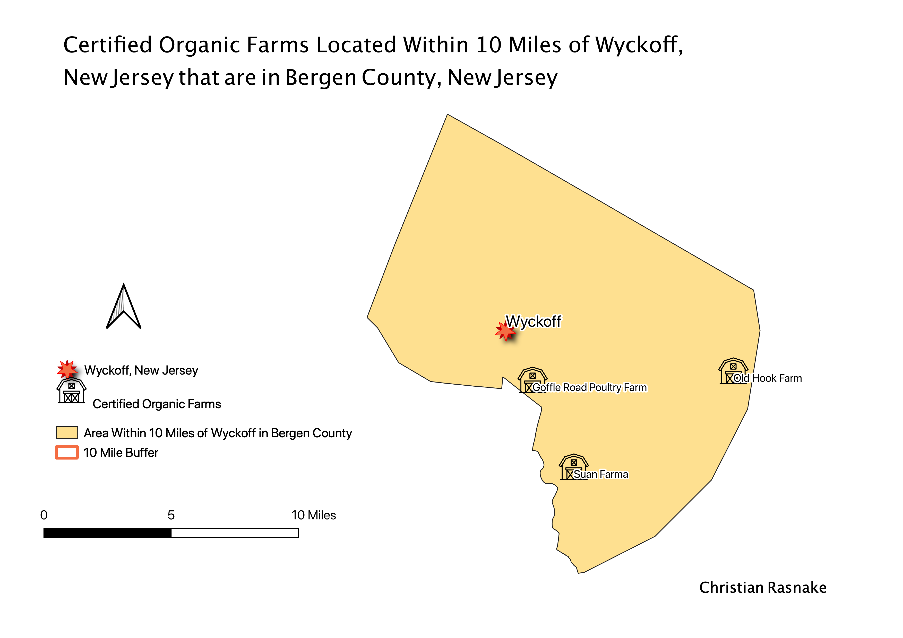
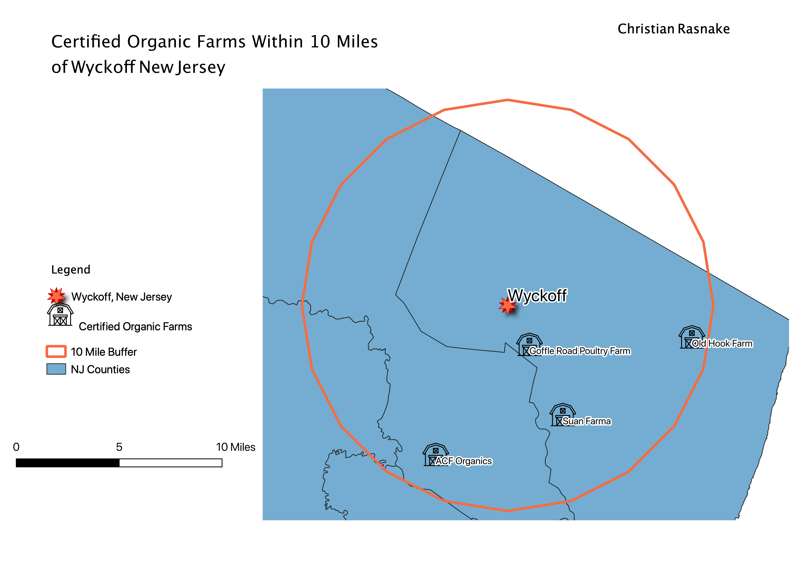

Homework 10: Analysis of Certified Organic Farms Within Bergen County and 10 Miles of Wyckoff, New Jersey
Christian Rasnake
This map aims to answer the question "How many Certified Organic Farms are there in a 10 mile radius from my hometown Wyckoff, New Jersey that are also within Bergen County?" I used the geoprocessing tools Buffer and Intersection. I used the Buffer tool to find the 10 mile radius around Wyckoff, New Jersey. Then, once I had the buffer in place, I was able to intersect the buffer layer with the selected feature of Bergen County in the county layer.

Hello
Step 1: Map of 10 Mile Buffer

Based on the above map,
Step 2: Map of Buffer and Intersection

Here, you can see that...
Final Map
Data used for this project
Source of NJ Organic Farm Data
CSV of NJ Organic Farm Data
Source of NJ Shapefile